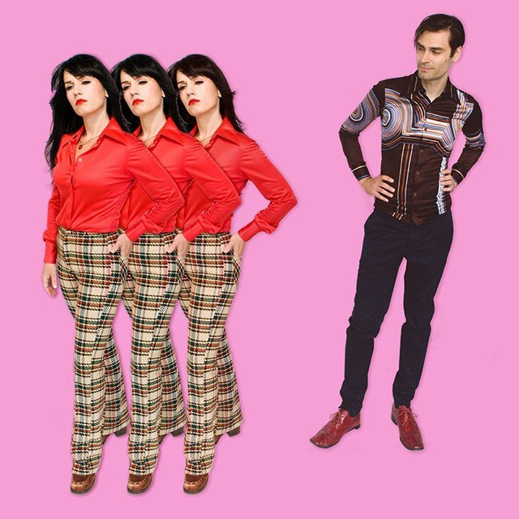

Interview: The Gods Themselves Discuss ‘New Excuse’ LP, Life Inside the Tech Boom, and Quarantine
The Seattle dance-punk outfit The Gods Themselves returned this May with a new LP entitled New Excuse. The group, led by the songwriting duo of Astra Elane (vocals, guitar) and Dustin Patterson (vocals, baritone), gained success with their track “Tech Boys,” off the band’s 2017 self-released LP Be My Animal, before reaching national attention with an appearance on Anthony Bourdain’s Parts Unknown series.
Following up on those accomplishments, TGT’s new album was recorded with famed producer Stephen Hague, responsible for synth-pop hits like Pet Shop Boys “West End Girls,” New Orders “True Faith” and “Regret,” as well as Siouxsie and the Banshees‘ “Kiss Them For Me,” to name a just few. This week Live Eye Tv had a chance to catch up with Astra and Dustin via email to discuss New Excuse, the success of their track “Tech Boys,” and life during quarantine.
LETV: Congratulations on the release of New Excuse! The band’s synth-pop and dance-punk leanings seem perfectly suited for working with a producer like Stephen Hague, whose discography includes production for artists like Orchestral Manoeuvres in the Dark, Pet Shop Boys, New Order, and Peter Gabriel, to name a few. How did The Gods Themselves come to work with Hague, and how did the experience shape the new record?
Dustin: Stephen represented a sound and aesthetic that we all loved. And luckily he loved us back. He was friendly and funny, but had strong ideas about the songs. He contributed a lot to the arrangements, tones, and overall sound of the album. In some cases, we re-wrote lyrics or hooks at his suggestion. It was a total collaboration. We were focused on making the best album we could make. We wanted a big polished sound and he certainly delivered. It’s the best sounding album we’ve made.
Astra: After self-producing all of our previous albums we decided we wanted to take things to the next level and learn from a master. We reached out to Stephen Hague’s manager with our fingers crossed and it turned out that he really liked our demos! The end result comprises arrangements that we would never have thought of as well as tones and techniques. It was incredible working with him. Stephen was very cognizant of our already defined sound only improved on it. Here’s a quote directly from him:
“It’s not everyday that I hear demos and say to myself ’I have to make this record’, but their songs and chemistry together are a potent combination, and I always know the real thing when I hear it. I’m lucky to play a part in the next Seattle wave, as led by TGT…surf’s up! “
LETV: As far as songwriting on the album is concerned, and how a song evolves and comes into being, is there a track you might take us through so as to demonstrate your process?
Astra: The songs start as a sketch by either Dustin or myself. The sketch could be well defined or just a riff. We then bring it into the room and play it with the rhythm section who add their own spin to it.
Dustin: Songs usually start when Astra and I bring the band a demo. Then we jam in the room, arranging and reimagining the song with the full group. A good example is “Lovers,” which began as two separate demos that we eventually Frankensteined together in the room. We then jammed on an outro and suddenly we had this new song full of sudden changes. There’s a lot of trial and error with this approach, but it brings life to the demo. It’s rare that our songs won’t significantly change once we get them in the practice space.
LETV: Thematically, the record often seems to deal with seeking that electric charge of connection that can happen between people or longing for it. There’s something very physical and intimate about the music and its concerns. Can you talk about some of the thematic influences behind New Excuse?
Dustin: I think this album, for whatever reason, was inspired by sex and longing. We tend to dress up and act provocatively onstage so the music had to suit the presentation to a degree. And dance music is very much about the body, so it fits that the lyrics are similarly obsessed. I know we were all striving, struggling and longing when we made the album so it definitely infused itself into the music.
Astra: Yes, sex and longing. All of our songs are written from the perspective of an experience or a feeling we wanted to convey. Sharing that feeling as authentically as we can hopefully foster that intimacy.
LETV: While much of the current record was probably written and recorded before the global pandemic and quarantine, was the band anxious at all about releasing the album under current conditions, or did it seem more necessary? Does the album bear any new light for you considering the times?
Astra: The album came out as planned but everything else has been put on hold, the big release party, the tour, and summer gigs. What a drag. I don’t think there was ever a doubt about putting the music out on time. It did feel necessary, both for folks to hear it and for us to move on and have closure to the creation of the album.
Dustin: This is an interesting time to release a record. On the one hand, it’s a hard time for everyone, particularly our friends in the music business. On the other hand, we have a captive audience that’s in need of entertainment. I’ve been pleased by the reception. My mom loves it. “Very professional.” The closing song, “Magick,” has an extra resonance now. It’s about loving in the face of everything ending. It always felt like the perfect closer, but now it feels even more apocalyptic and defiant.
LETV: The Gods Themselves have always seemed to enjoy local success here in Seattle, but your segment with Anthony Bourdain on Parts Unknown and your track “Tech Boys” really opened you up to a larger, international audience. What can you tell us about that song and how it led to appearing on the show?
Dustin: I was working at Amazon and really displeased by its culture of mistreatment. I would come into the practice space overwhelmed by rage. “Tech Boys” was me focusing that rage into a song. I knew we had something special when someone down the hall from our space knocked on the door to tell us he liked it. That never happens. Once we made the video, Bourdain’s production team reached out and of course we said yes. They were all a dream to work with, very professional, funny and relaxed. Bourdain himself was very generous with his time and very candid about his life. It was heartbreaking when he killed himself. He’s someone you feel very close to right away.
Astra: It’s a damn catchy song and so relevant. We got a lot of hits on it and somehow the buzz reached New York. I was in disbelief when the production company sent us an e-mail. I had to keep re-reading it.
LETV: While all cities go through their ups and downs, Seattle’s tech boom has often made it too expensive for many artists to live. Unfortunately, that can take a real toll on a city’s creative life. By the same token, it is easy to fall into the trap of thinking “everything was so much cooler” back when…If gentrification has narrowed opportunities for artistic expression, how do we fight back? Or more particularly, how have The Gods Themselves fought back?
Dustin: The indisputable fact is: it WAS cooler back then. Slower, quieter, weirder, scuzzier, more dangerous, MUCH cheaper. It had personality. Now that’s been almost entirely erased by a corporate mono-culture. We fight back by supporting other artists in the community. Arranging bills with bands we love like Bear Axe, Razor Clam, Eric Blood, and others. We shine a light where we can, buy their records, see them at gigs. We band together to stay alive. You have to find your community and do what you can to keep it strong.
Astra: Before lockdown we could always play a show whether it was at a venue or a house party or festival. We got really good at putting on our own shows with our other artist friends, putting the bill together, bringing in folks to do light shows, bringing in DJs to play in between sets, etc. Stayin’ scrappy is the way to survive. Where there’s a will, there’s a way, until there’s a pandemic anyway.
LETV: With everything so up in the air as to when people can gather again—let alone see music in a live setting—there’s a lot of reason to be anxious about the state of the music industry? Any reflections at this time, or glimmers of hope?
Dustin: We’ve had pandemics throughout human history. They all pass eventually. But music never stops and it will never go away. It may take a long time, but people are social animals. As soon as this is over, we’ll be playing and dancing louder and longer and closer than ever.
Astra: Seeing some folks easily transition to virtual like they were changing their socks or something. Not that easy for me. I vibe off the energy of my band and not being able to play with them sucks. Music is my therapy and I need some soon.
LETV: Many musicians and labels have responded to quarantine by live streaming performances. This has led to all kinds of amazing events like Nick Cave’s 24-hour live performance stream on YouTube for instance or the chance to see inside a favorite artist’s bedroom or practice space. Have you folks enjoyed any live streams during this period? Do you find it a satisfying answer considering the circumstances, and does the band have any live streaming events planned?
Dustin: I’ve seen some good ones. The Nick Cave stream. I’m turning more to comedy podcasts to get me thru. Things like We Hate Movies, SuperEgo, Conan O’Brien Needs A Friend. We’re considering something for sure. Stay tuned.
Astra: No streams right now but soon. Atm we’re working on videos, another part of the creative process which is also fun. Also, thank god we live in the golden age of television.